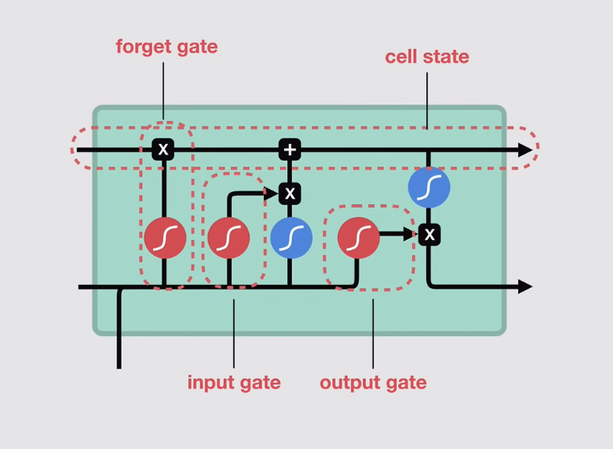

Long Short-Term Memory (LSTM)¶
LSTMs are a specialised type of RNN designed to solve the vanishing gradient / short-term memory problem. They introduce a separate cell state which is like a "memory highway" that can carry information across many timesteps with minimal degradation.
Why we don't use RNN¶
In a standard RNN, the hidden state at step \(t\) is:
| RNN Mechanism | Problem |
|---|---|
| Words --> vectors | Fine |
| Process one-by-one, passing hidden state | Hidden state gets overwritten each step |
| tanh squeezes values to \((-1, 1)\) | Repeated squashing causes vanishing gradients |
| Early inputs far from the output | The network "forgets" them |
LSTMs fix this by keeping a separate cell state \(C_t\) that bypasses the squashing operations.
LSTM Architecture¶

Main concept is that the LSTM cell has two parallel flows:
- Cell state \(C_t\): the long-term memory highway (modified by gates, not a full overwrite)
- Hidden state \(h_t\): the short-term output passed to the next timestep and to the prediction head
Cell State¶
The cell state acts as a transport highway through the sequence:
Information can be added or removed from the cell state at each step via gates, but it is never fully replaced, therefore making it easy for the network to retain information from many timesteps ago.
Gates¶
LSTM uses three gates, each implemented as a small neural network with a sigmoid activation:
- Output near 0 → gate is closed (block information)
- Output near 1 → gate is open (allow information through)
Gate 1: Forget Gate¶
"What should we erase from the cell state?"
- Takes previous hidden state \(h_{t-1}\) + current input \(x_t\)
- Outputs a value in \((0, 1)\) per cell-state dimension
- Multiplied element-wise with \(C_{t-1}\) where values near 0 are erased, while values near 1 are kept
Gate 2: Input Gate¶
"What new information should we write to the cell state?"
Two parallel operations:
Combined cell state update:
- \(f_t \odot C_{t-1}\): old memory, partially forgotten
- \(i_t \odot \tilde{C}_t\): new information, selectively written
Gate 3: Output Gate¶
"What part of the cell state should we expose as the hidden state?"
tanh(C_t)squashes the cell state to \((-1, 1)\)- The output gate
o_tselectively exposes parts of it as the new hidden state - Both \(C_t\) and \(h_t\) are passed to the next timestep
Summary: Information Flow¶
| Gate | Controls | Key operation |
|---|---|---|
| Forget \(f_t\) | What to erase from \(C_{t-1}\) | \(f_t \odot C_{t-1}\) |
| Input \(i_t\) | What new info to write to \(C_t\) | \(i_t \odot \tilde{C}_t\) |
| Output \(o_t\) | What portion of \(C_t\) becomes \(h_t\) | \(o_t \odot \tanh(C_t)\) |